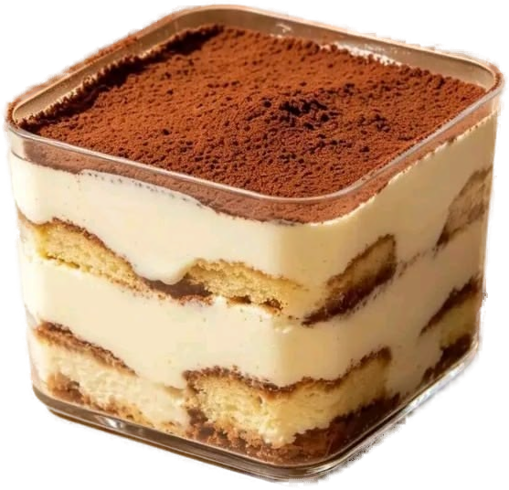

Hollister
The reversible tops are the clever bit. One piece, two outfits, and it photographs as two. They stopped trying to be the 2012 version of themselves and actually looked at what teenagers are buying now.
marketing, and a habit of learning whatever the project needs.
six projects, six coversEvery cover is a project I have worked on. Click one to read the brief, what I did, and what came out of it.
hover to lift · click a cover to read that project
the cv, abridgedFive roles, two degrees, and the bits that actually taught me something.
Five layers, set down in order. The coffee soaks up from the bottom and the cocoa goes on last. Click a layer to read it.

What a brand should stand for, and who it is for. Positioning, personas, competitive landscape and a costed six-month go-to-market for UCL's entrepreneurial marketing module, plus business modelling, Ansoff and value stream mapping on AprilCares health.
Tiramisu takes its name from tirami su, which means pick me up. The layers only work stacked.
tools, with proofThings I actually use, each with the work that shows it.
not favourites, case studiesSix brands I keep an eye on, and what I think they are getting right.
updated monthlyCompanies I'm reading about right now. This list is never the same twice.
The reversible tops are the clever bit. One piece, two outfits, and it photographs as two. They stopped trying to be the 2012 version of themselves and actually looked at what teenagers are buying now.
Two guys from Madrid who built a clothing brand by filming themselves building it. The drops sell out because people have watched the whole thing. The community arrived first and the clothes followed.
A creator mispronounced croissant as Prashant, it went everywhere, so Britannia put Prashant on the pack. No campaign. Someone had the nerve to sign it off inside a week, which in FMCG is the hard part.
london / indiaUCL entrepreneurship graduate, currently looking for the first proper one.
I'm Muskaan. I love doing creative things and thinking beyond the obvious.
I'm a recent UCL Entrepreneurship graduate, based between London and India. Most of my work so far has been brand positioning and campaigns, including my roles at AIESEC Cardiff and Therapy Works.
Outside of work I've also taught myself Framer, Claude Code, HubSpot, Figma and Canva, and used them to build real interactive websites. I'm curious to learn more, I love talking to people, and I pick things up quickly.